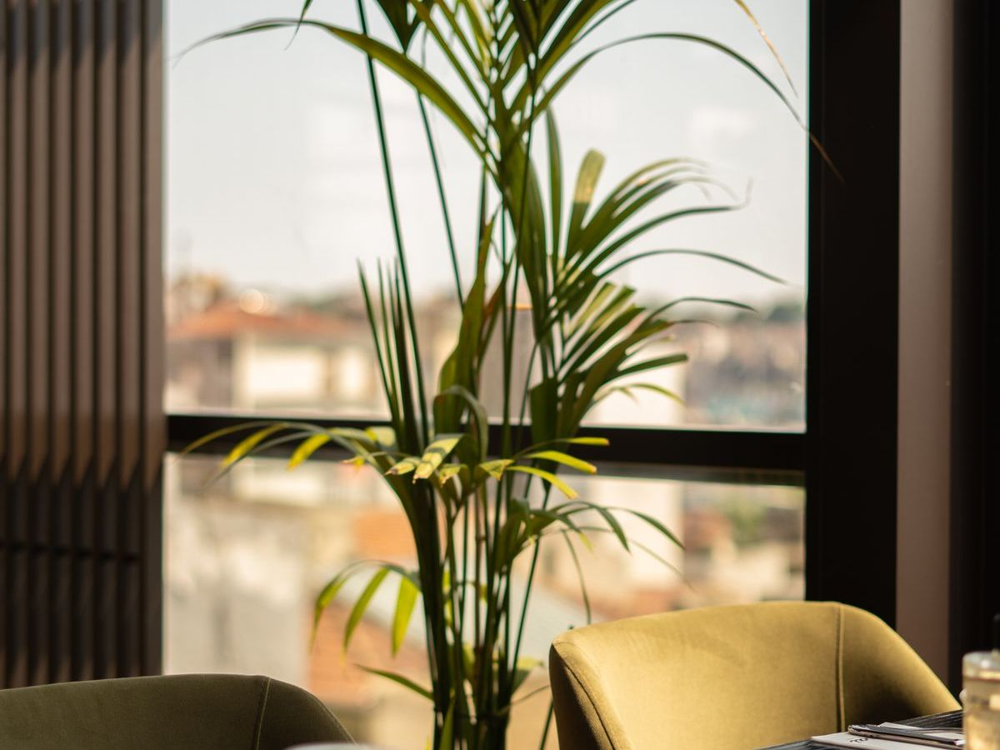

Die besten Feuchtigkeits-Spender
Sortiert nach Transpiration und Praxis-Tauglichkeit. Mit selbstbewässernden Töpfen besonders unkompliziert.

Areca-Palme
Feingefiederte Wedel, bis ~1 Liter Wasser/Tag bei großer Pflanze. Braucht helles indirektes Licht.
Pflege: Mittel · Effektiv ab: 80–100 cm · Kosten: 40–100 €
Mehr auf Wikipedia →
Schwertfarn / Boston-Farn
Dichte Wedel, einer der besten Luftbefeuchter. Mag konstante Feuchte.
Pflege: Mittel · Effektiv ab: mittelgroß · Kosten: 20–50 €
Mehr auf Wikipedia →
Einblatt (Friedenslilie)
Große Blätter + weiße Blüten. Verträgt auch weniger Licht, zeigt Durst durch Hängen.
Pflege: Leicht–mittel · Effektiv ab: 40 cm · Kosten: 30–55 €
Mehr auf Wikipedia →
Efeutute (Pothos)
Extrem robust, wächst auch bei weniger Licht, rankend oder hängend.
Pflege: Sehr leicht · Effektiv ab: buschig · Kosten: 20–40 €
Mehr auf Wikipedia →
Grünlilie (Spider Plant)
Sehr einfach, bildet Kindel, gute Transpiration.
Pflege: Sehr leicht · Effektiv ab: volle Pflanze · Kosten: 15–35 €
Mehr auf Wikipedia →